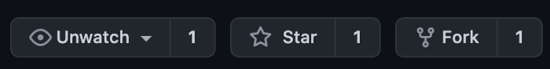

Git workflow for data scientist¶
Github 101 for team projects
 Photo by ali nafezarefi on Unsplash
Photo by ali nafezarefi on Unsplash
If you are working by yourself, then git clone, git status, git add, git commit, git push would probably be sufficient for your work. However, if you ever work on a team project with other data scientists and software engineers, it is better to use forks and branches. Here is the git workflow for you if you are on a team project:
Step 1: git clone¶
The first step is to git clone your team’s project to your local machine, and then get in the project folder:
git clone https://github.com/your-team/team-project.git
cd team-project
Step 2: Fork the team project you are going to work on¶
It’s better if you commit your changes to a local branch and push the branch to your own fork. If everyone uses branches on the team project repository, there will be too many branches and become unmanageable. So fork your team project by going to the project page and click the “Fork” button on the top right of the page.

Step 3: Add the forked repository.¶
Next, we add your forked repository and give it a name, e.g., “your-username”.
git remote add your-username https://github.com/your-username/team-project.git
Step 4: Create a new branch¶
Before we create a new branch, we should typically be in the main branch (Github default was master. Now the default is main). First, we check which branch we are in. If we are in main, then git pull to get all the up-to-date files. Then, we can create and check out a new branch called “your-newbranch”. Now you should be in the branch “your-newbranch”.
# list all branches
git branch -a
# pull in all the changes from main
git pull
# create and checkout a new branch for your work
git checkout -b your-newbranch
Step 5: Write your code and commit your changes¶
Next, we can do some real work in the current branch “your-newbranch”, and then commit our changes. Don’t forget to write meaningful commit messages!
# check status
git status
# add your new code in file your-new-code.py
git add your-new-code.py
# commit your changes
git commit
Step 6: git push¶
Now we can push the changed new branch to your forked repository. It is important that we set your fork to be the upstream of your branch, so that we can push to your fork and not the team repository directly.
git push -u your-username your-newbranch
And then we can go back to the main branch.
git checkout main
Step 7: pull request¶
Now if you open your team project repository https://github.com/your-team/team-project, you should see a “pull request” button at the top of the page. You can click on it and make a pull request. Finally, your team can review your work and then merge your work to the main.
Alternative approach¶
Alternatively, you can git clone your fork instead of the original repository, and set the original repository as upstream, and then git push to the upstream:
# git clone your fork
git clone https://github.com/your-username/team-project.git
cd team-project
# add team repository as upstream
git remote add upstream https://github.com/your-team/team-project.git
# pull the most up-to-date data from the team repository
git checkout main
git pull upstream main
# commit your changes to your-newbranch
git checkout -b your-newbranch
... (make changes)
git commit
# push your changes to your fork
git push origin your-newbranch
Now you know how to use git to work on a team project. Hope you enjoy it!
By Sophia Yang on December 18, 2020